Şehrim
Kocaeli
Sanayi kenti olmasının ötesinde; tarihi dokusu, kıyı şeridi ve doğasıyla benzersiz bir şehir.
Doğal Güzellikler
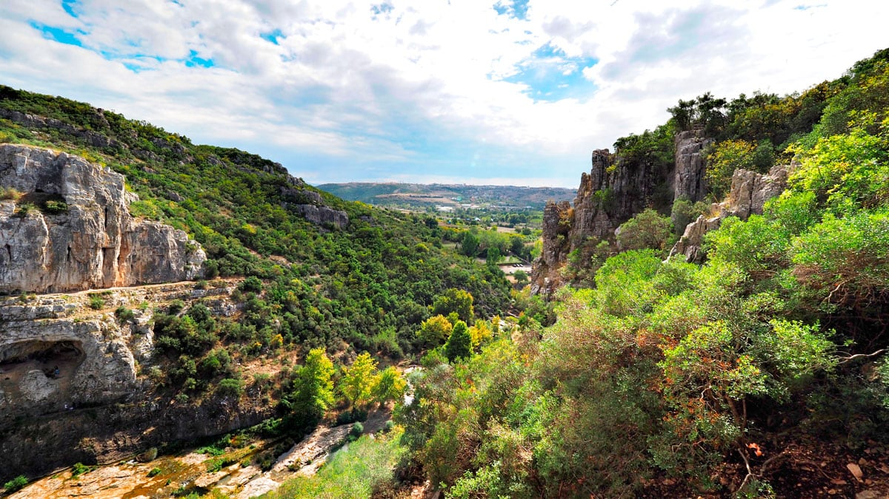
Ballıkayalar Kanyonu
Gebze'ye yakın, doğa yürüyüşçülerinin gözdesi olan etkileyici kanyon
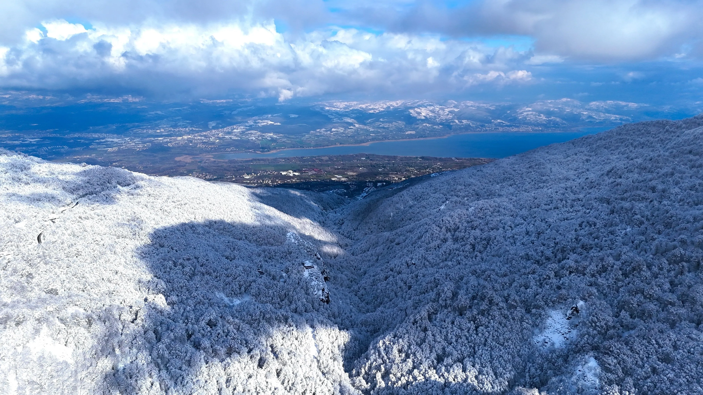
Kartepe
1600 metreye ulaşan zirvesiyle kışın kayak, yazın yürüyüş cenneti

Seka Park
Eski kağıt fabrikasından dönüştürülmüş şehrin nefes aldığı yeşil alan
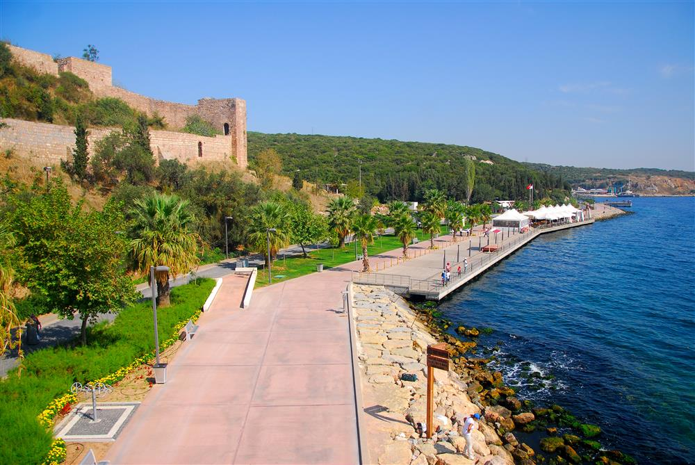
Eskihisar Sahili
İzmit Körfezi kıyısında huzurlu sahil manzarası
Tarihi Mekânlar
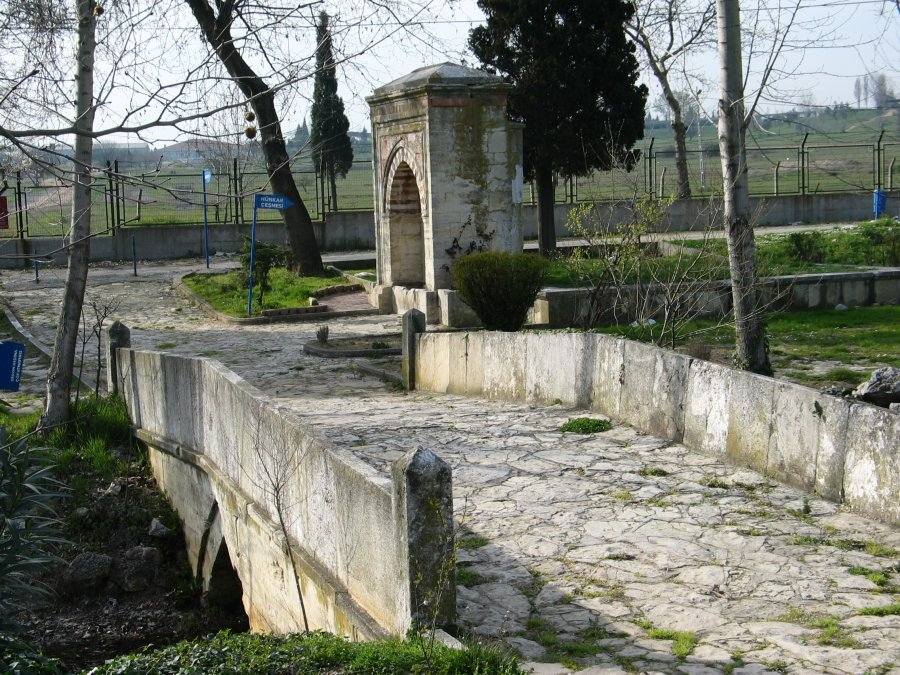
Hünkar Çayırı
1481'de Fatih Sultan Mehmet'in son seferinde otağını kurduğu ve vefat ettiği tarihi alan
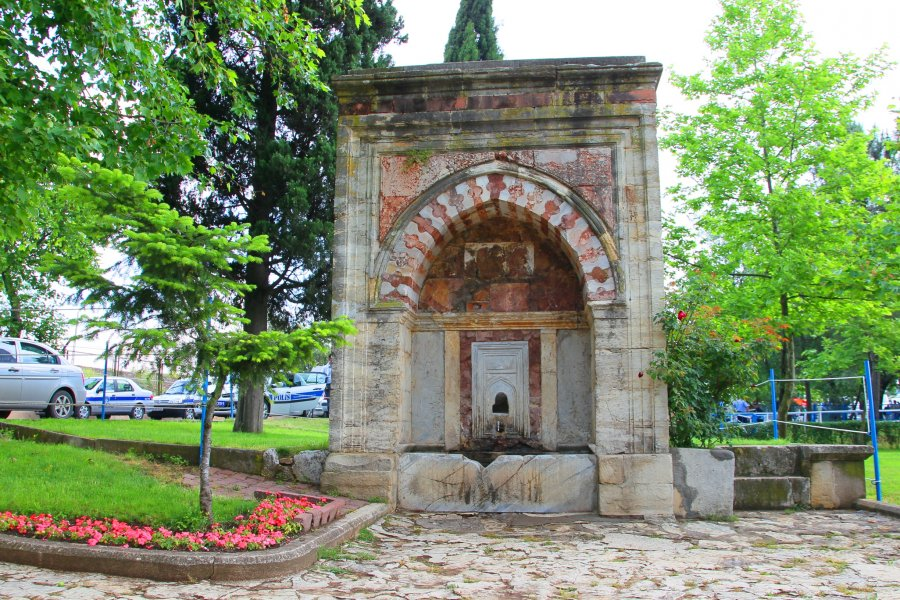
Hünkar Çayırı
"Hünkar" adını Fatih Sultan Mehmet'ten alan bu çayır, Osmanlı tarihinin en önemli mekânlarından biridir
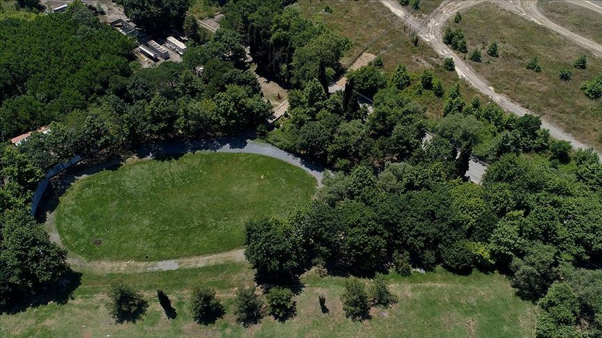
Hünkar Çayırı
Gebze'nin tarihî dokusu içinde korunan bu alan, doğa ve tarih severlerin buluşma noktasıdır

Eskihisar Kalesi
Bizans döneminde temelleri atılan, İstanbul'u Anadolu'ya bağlayan geçiş yollarını koruyan stratejik kale
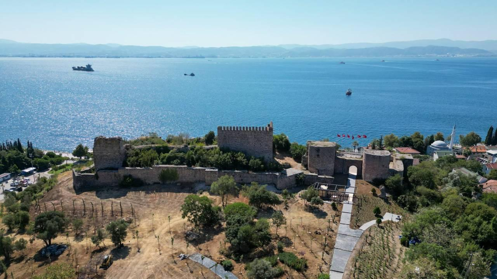
Eskihisar Kalesi
Orhan Gazi döneminde Osmanlı'ya geçen kale; Fatih'in İstanbul fethi hazırlıklarında savunma noktası olarak kullanıldı
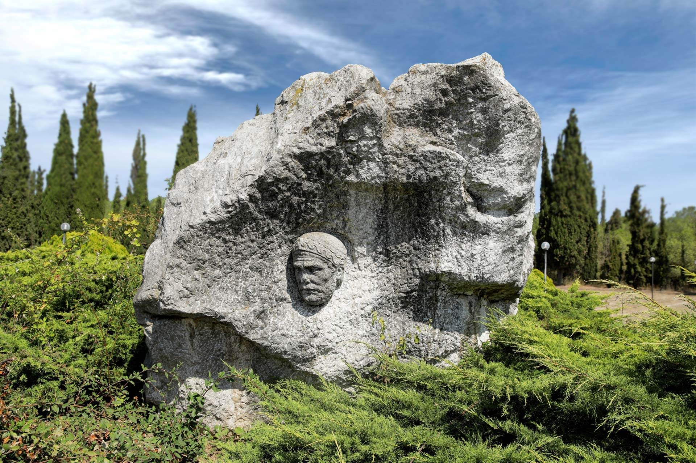
Hannibal Anıt Mezarı
Dünyaca ünlü Kartacalı komutan Hannibal'in Gebze'deki tarihi mezarı

Osman Hamdi Bey Müzesi
Ünlü ressam ve müzeci Osman Hamdi Bey'in yaşadığı tarihi konak
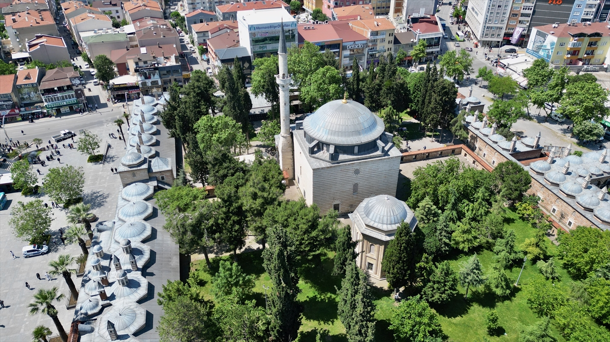
Çoban Mustafa Paşa Camii
16. yüzyıldan kalma Gebze'nin simgesi olan tarihi Osmanlı külliyesi
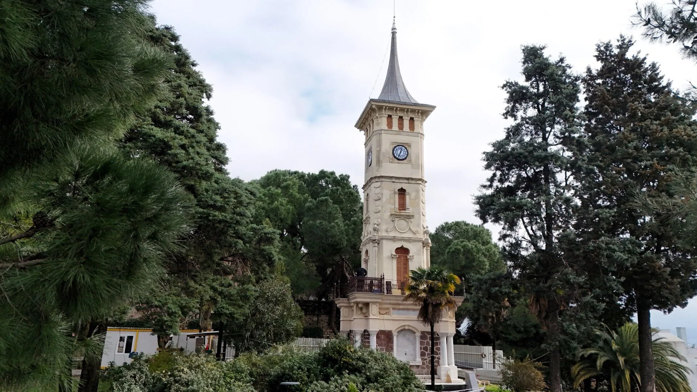
İzmit Saat Kulesi
İzmit'in simgesi olan şehir merkezindeki tarihi saat kulesi
Modern Kocaeli
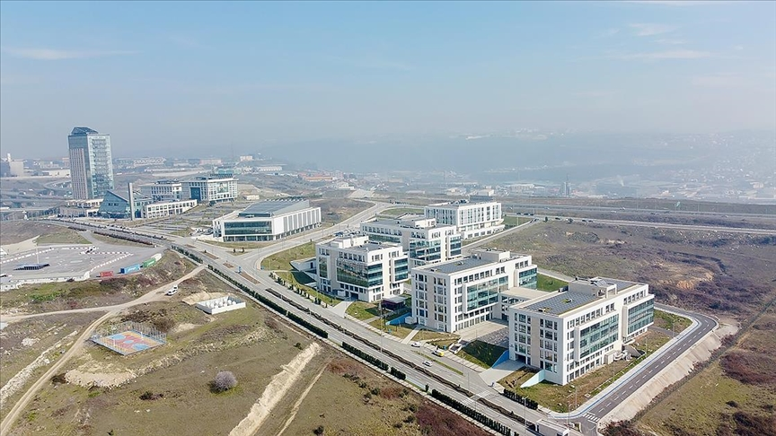
Bilişim Vadisi
Gebze'de Türkiye'nin teknoloji ve inovasyon merkezi; modern altyapısıyla geleceğin şehri

Gebze – Kuş Bakışı
Tarihi ve modern dokunun iç içe geçtiği Gebze'nin panoramik görünümü
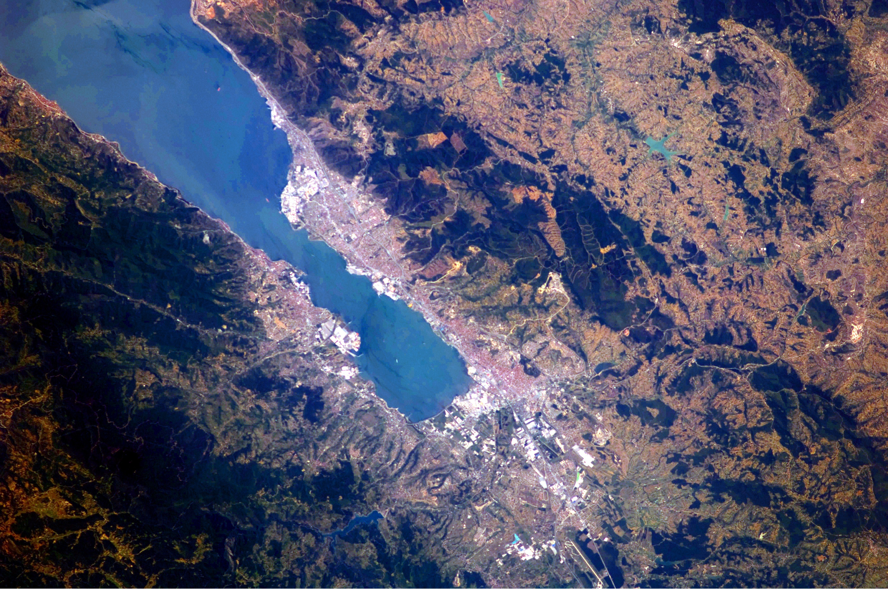
İzmit Körfezi
Şehrin mavi kıyısı; gelişen sanayi ile körfezin modern buluşma noktası
Gezilecek Yerler
Kocaeli'nde Mutlaka Görün
⚔️
Hünkar Çayırı
1481'de Fatih Sultan Mehmet'in son seferinde otağını kurduğu ve vefat ettiği tarihi alan. Adını "Hünkar" (padişah) kelimesinden alır.
🏔️
Ballıkayalar Kanyonu
Gebze'ye yakın etkileyici bir kanyon; doğa yürüyüşçülerinin ve macera tutkunlarının gözdesi.
⛷️
Kartepe
Kış aylarında kayak ve snowboard, yaz aylarında doğa yürüyüşü imkânı sunan dağ ilçesi.
🏰
Eskihisar Kalesi
Bizans döneminden kalma, Orhan Gazi ile Osmanlı'ya geçen tarihi kale. Marmara Denizi'ne hâkim konumuyla stratejik bir savunma noktasıdır.
🗿
Hannibal Anıt Mezarı
Dünyaca ünlü Kartacalı komutan Hannibal'e ait olduğuna inanılan Gebze'deki tarihi mezar.
💻
Bilişim Vadisi
Gebze'de konumlanan Türkiye'nin teknoloji ve inovasyon üssü; modern mimarisiyle dikkat çekici.